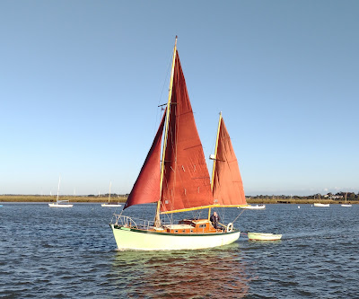
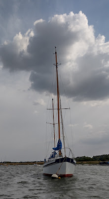
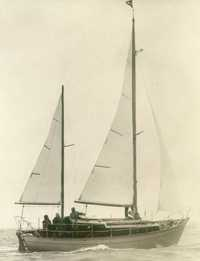
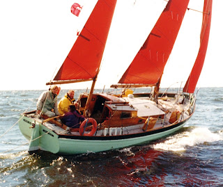
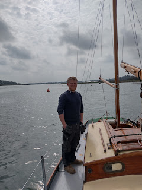
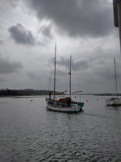

 |
| Peter Duck in early morning sun, Aldeburgh, October 2023 (Jane Russell) |
{kind=link}
Every year Classic Boat magazine puts forward its selection of yacht restorations and newly built boats in traditional style for public vote. The prize last year was a tasteful trophy and a bottle of gin for the owner. The shortlisted boatyards get an opportunity to display a Classic Boat logo, if they wish. It’s good for their business and local community awareness. I'm hoping that the public votes make the boatyard workers feel good too.
In 2023, traditional wooden boatbuilding was officially put on the endangered list of British crafts. Perhaps this is a little like removing the word ‘acorn’ from the Oxford Junior Dictionary: arguably it's recognising a truth – young people today don’t need to name ‘acorns’ -- or adder, ash, beech, bluebell, buttercup, catkin, conker, cowslip, cygnet, dandelion, fern, hazel, heather, heron, ivy, kingfisher, lark, mistletoe, nectar, newt, otter, pasture and willow (words listed by Robert MacFarlane as being excised in 2015). They do need ‘attachment, block-graph, blog, broadband, bullet-point, celebrity, chatroom, committee, cut-and-paste, MP3 player and voice-mail.’ https://www.theguardian.com/science/the-lay-scientist/2015/mar/03/why-the-oed-are-right-to-purge-nature-from-the-dictionary But this new listing says something that leaves many of us shocked and sad. Is it that we don't ‘need’ wooden boats any more -- or the craftsmen who build and maintain them What? Us, in Britain?
This week I’ve been plodding gently
through some 1960s issues of Yachting Monthly magazine. It’s a little like revisiting a forgotten world. Wood was the normal material for boats then (when I was six). Fibre glass coatings or GRP construction were
new and potentially exciting. The market for leisure boating was expanding,
humming with energy and enthusiasm. The London Boat Show in January, in Earls Court, was a thrilling
event. I remember visiting as a child, awestruck at the number of boats crammed
in, real boats – you could go on board. There was real water too!
My father was a yacht agent who used the Boat Show to launch his new ‘brand’ of Peter Ducks -- repro-ducktions, I’ve heard them called, unfairly. I'd rather call them tribute ducks. Dad launched the class because he knew what a lovely boat 'our' PD was and thought others would like one as well. They were built in wood, of course. If you look at them today, you will see that each has her own characteristics as well as expressing their owners’ individuality and taste and the histories which have developed over their various lifetimes. Boats like this have the capacity to inspire careful effort and craftsmanship. One day we might see a ‘Peter Duck’ nominated for a Classic Boat award.
 |
| Depper, a Peter Duck living in Woodbridge |
.jpg){kind=link}
Before that, when Arthur Ransome had her designed and built in 1946, she wasn’t just new, she was modern! Peter Duck is distinctively post-war, quite a different style of yacht to any other he owned before or afterwards. Ransome knew that he needed ‘a sort of marine bath-chair’, but this jolly little ketch with her ‘motor-boaty’ bow and small, easy-to-handle, Bermudan sails – set quite high so no one gets hit on the head – was not to his taste. ‘She looks ree-dick-ulous,’ said his wife Evgenia, probably adding a few well-chosen words about lollipops on sticks, when her husband had sailed their new yacht past her, wondering whether it mightn’t be worth a photo.
 |
| Earliest known photo of Peter Duck from the Laurent Giles archive |
{kind=link}
{kind=link}
Fifty years later, in 1998, when she came home from living in Russia, my youngest brother Ned and I hurried to meet her -- and were shocked by her appearance. Her planking is larch, a light, somewhat volatile wood, reasonably adapted to the English East Coast, not sufficiently robust for winter in St Petersburg. Her seams had been roughly though effectively caulked with a thick tar mixture. It looked like a botched botox. One of the reasons I am glad that Classic Boat has shortlisted her now is as a thank-you for all the work the Woodbridge boatyard (Eversons) did then. She wouldn't have survived without them.
 |
| Peter Duck sailing off St Petersburg (Ingram Murray) |
.jpg){kind=link}
I found it odd, though, when people told me she was a ‘classic’; I just thought of her as our boat. It feels a bit awkward too. Being the custodian of a ‘classic’ is rather like finding your house unexpectedly featured in Homes and Gardens – it sets a standard of expectation which those of us who cannot always be trusted to keep our brass polished and brightwork immaculate may find daunting.
Another quarter century has
passed since that first restoration and I’m forced to realise that both PD and I are now significantly older
than Arthur Ransome was in 1946. (Harsh living conditions
in Russia hadn’t been kind to him either.) When her regular survey in spring 2021 revealed areas of rot under the mainmast, I knew I had to take action. It wasn’t
just that I enjoy looking up at her gleaming spar against the blue sky of a
summers day and didn’t especially want to see it come crashing down on me. It wasn't only because I love her and see her as 'part of my soul'. Objectively it was because the better I’ve got to know Peter Duck –
sailing as well as maintaining and enjoying her as an adult – the more I have admired the excellence of
her design and the skill of her builders, (Harry King & sons of Pin Mill on the River Orwell).
I realise that she and I are both immensely lucky that that level of craftsmanship
still exists in the Woodbridge Boatyard where she lives. Long may it last.
 |
| Matt Lis, Woodbridge Boatyard manager |
{kind=link}
Please vote. Here are your choices: PD is in the Restored Vessel under 40'. Frankly they're all lovely. https://awards.classicboat.co.uk/award-categories/
 |
| PD back in the river after the 2021-22 stage of her restoration https://authorselectric.blogspot.com/2022/04/aaaah.html In 2022-23 her keel bolts were replaced and some underwater softness excised. |
{kind=link}